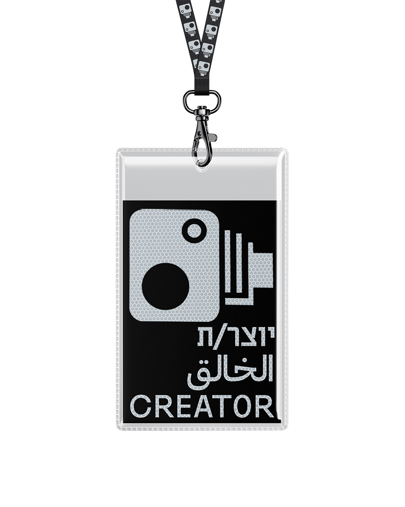
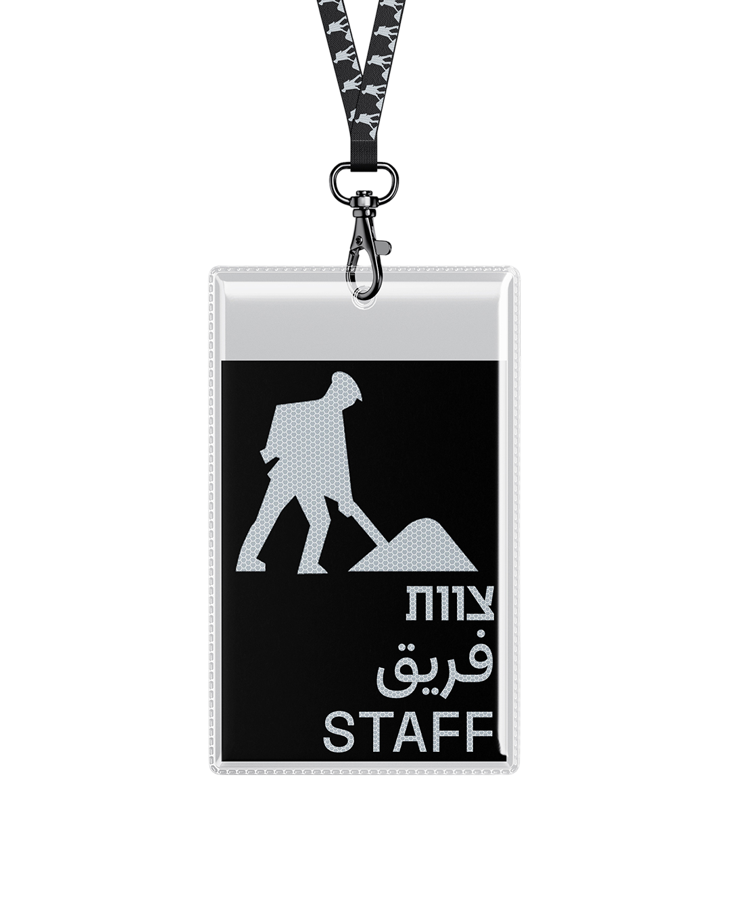
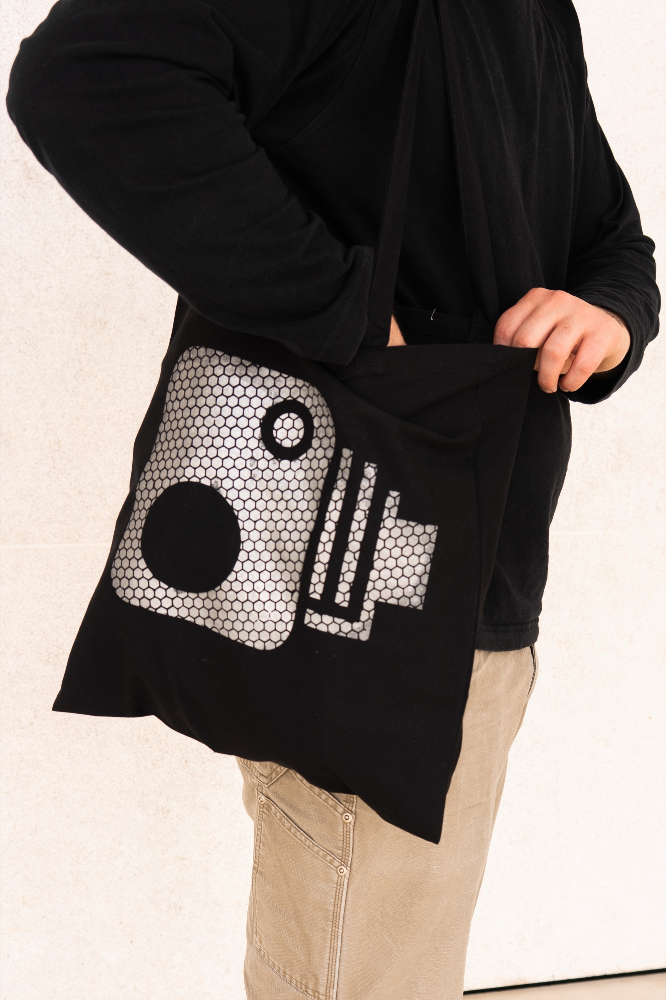

The Lodge x Core De Roy
Cinema South Festival
biss
The Lodge x Core De Roy
Cinema South Festival
biss
Brand Identity & Graphic Design
A rebranding project for a Berlin listening bar, merging The Lodge with Core De Roy.
Inspired by the floral ornaments on the bar’s back door and its unique tradition of fresh flowers, the identity combines the bar’s history with its musical character. The logo incorporates subtle references to vinyl records, a turntable needle, and the bar itself.
Logotype
Logo
Instagram posts


Instagram stories


Menus


Brand Identity & Motion Design
A visual identity project for the Cinema South Film Festival. Inspired by the journey to the festival, road markings, and signage, the identity uses a system of graphic strips that also reference cinematic film reels. Reflective elements connect the visual language of roads and cinema through their shared relationship with darkness and light. The identity was applied across a logo, festival opening sequence, motion posters, film posters, signage, badges, staff vests, and merchandise.
led by Eyal Zaken
Logo
Opening Transition
Motion Poster

Movies Posters


Signs

Tags


Vest


Side Bag


Reflective Hat


Reflective Key Chain


Logo
Brand Identity & Packaging Design
A branding project for a conceptual, swallowable chewing gum designed to promote oral health while reducing environmental waste. Created for a young, environmentally conscious audience. the visual identity combines pharmaceutical-inspired design with playful typography, bold colors, and a lighthearted approach.
The branding balances health, sustainability, fun and reimagining chewing gum as a functional everyday product.
Created in collaboration with Noga Reshef, under the guidance of the late Adlai Stock.